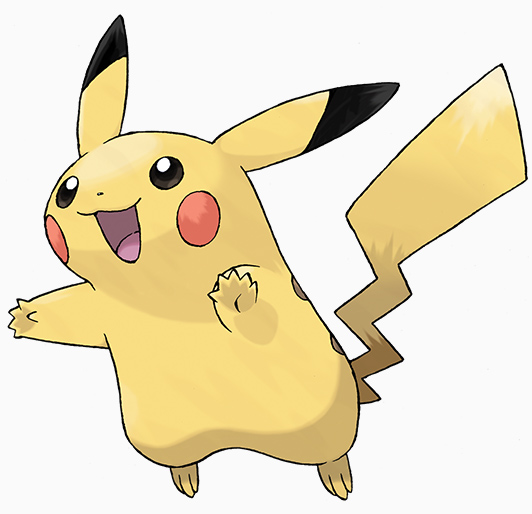

Сайт про покемонів
"Покемони" - це незвичайні істоти, що живуть серед звичайних людей. Вони не розмовляють, а лише повторюють своє ім'я. Але при цьому вони розуміють один одного. Серед покемонів можуть зустрітися і говорять на людському, але вони рідкісні.
Живуть покемони у світі, званому світом покемонів. У світі покемонів немає тварин, є тільки покемони. У чому покемони схожі на звичайних звірів: є хижаки, є травоїдні. Покемони-рослини можуть харчуватися за рахунок фотосинтезу. У покемонів є боротьба за територію, боротьба за владу в групі, за їжу. Є види покемонів, які геть не переносять інші види.